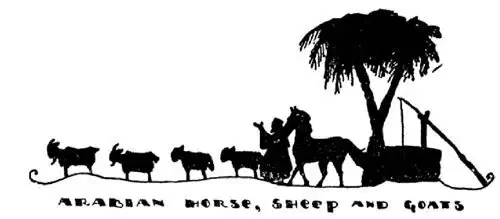
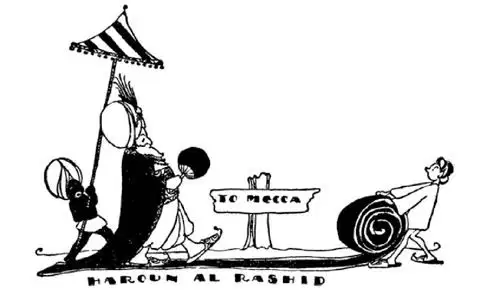

53
The Land of Bedtime Stories
产生《一千零一夜》的国家

HAVE you ever been thirsty—really thirsty? Very few people in our country ever have. Have you ever gone for more than one whole day without a drink of water? Some people have gone without food for days and even weeks, but no one ever has gone without water for as long as a week. Suppose that you lived in a country where there is not a single river nor lake in the whole land, where it seldom, if ever, rains, where there is practically no water to drink and even less for washing—a country that is almost surrounded by water, but water you can’t drink because it is salt—a country that is a desert except for a little fringe around the edge and damp spots here and there. That country is Arabia, the home of the Arab people. How can any one live there? The answer is that people can only live along the edges or in those few spots where there is water. These spots are called oases. Dates are bread and butter, meat and dessert to an Arab. Dates grow on palm-trees, so the Arabs plant palm-trees in deep holes in order that their roots may be far down where the ground is a little damp. The well-to-do Arab has a camel, because that is the only animal that can stand hardships such as lack of food and water for any length of time; also, he has a few goats or sheep and a horse. The Arab horses are small but they are swift runners. Some say they are the finest in the World, and many of our race-horses have come from Arab stock.

阿拉伯马、绵羊和山羊
The Arabs are very much like all boys and girls in one particular—they love to listen to good stories, especially at night. They can’t get enough of them. Once upon a time there was a king in the old days long ago when kings could put to death whomsoever they wished. This king had a wife whom he was going to put to death the next morning, but she told him a bedtime story which so interested him he wanted to hear another. So, on condition that he would spare her life one more day, she promised to tell him another story the next night. And again, day after day, he postponed putting her to death in order that he might hear another story at night. This she kept on doing for one thousand nights and one night more for good measure until the king could no longer live without her stories, so his queen was saved. Some of the most famous of these stories have been translated into English. They are called the “Arabian Nights.”
Arabia was the birthplace of Mohammed, the man who started the Mohammedan religion. Mohammed was born in a place called Mecca about six hundred years after Christ was born. Mohammed thought he was called by God to be His messenger. His wife and friends believed in him, but his neighbors did not, so they ran him out of Mecca. He fled to the next town, Medina, where he preached to the people, and before long there were millions who followed him and obeyed his teachings, and now to-day there are about one third as many people who believe in Mohammed as believe in Christ. Mohammedans think Mecca is the center of the World. Jerusalem is one of their holy cities, but Mecca is their holiest of holies. Medina, which means simply “The City,” is second only to Mecca in holiness. The Mohammedans think that one prayer said at Medina is worth a thousand prayers said anywhere else, so Mohammedans send long distances to have prayers said for them in Medina.
The Mohammedans have commandments as the Christians do. We have ten; they have four or more. One of their commandments is to pray five times a day; another is to give a present to every beggar who asks—it doesn’t matter how little—it may be less than a penny; a third is to fast for a month each year—that’s something like Lent; and a fourth is to make a trip to Mecca some time during their lives. Such a trip is called a pilgrimage, and every Mohammedan, no matter where or how far off he lives, hopes to make a pilgrimage to Mecca some time before he dies. A great Mohammedan king named Aaron the Just once made the trip from Bagdad to Mecca—hundreds of miles—all the way on foot, but as he was a king, the whole way was covered with carpet for him to walk on!

The whole way—hundreds of miles—was covered with carpet for the king to walk on
整条道路——几百英里——全都铺上了地毯，供国王行走
Have you ever seen a “shooting-star” in the sky? Most shooting-stars usually burn up before they reach the ground, but some do not. At Mecca there is a mosque and inside this mosque is a black stone called The Kaaba. The Mohammedans say this stone was sent down from heaven, and that may be true, for it is probably a shooting-star that fell to the ground before it burned up. The Mohammedans think, if they kiss this stone, all their sins are forgiven and they will go to Heaven and have a high place there when they die. They say this stone was once white, but it has been turned black by all the sins that have gone into it from the countless kisses of Mohammedans. A railroad one thousand miles long has been built from Damascus to Medina, and there is now a bus line from Medina to Mecca, but this railroad and bus are only for pilgrims, for none but Mohammedans are allowed in either city—Mecca or Medina.
I have told you of a White Sea and a Black Sea. Here is a Red Sea. It is a long, narrow sea bordering Arabia. I don’t know why it’s called Red, unless it is because it’s red hot, for I have been there, and the water is as blue as the Mediterranean. There is a little strip of land that used to separate the Red Sea from the Mediterranean, but men have dug a canal through this strip of land so that ships may pass from the one sea to the other. This strip of land is the Isthmus of Suez and the canal across it is called the Suez Canal.
The Suez Canal is one of the most important canals ever dug. It is important because, before it was dug, this little isthmus that tied together the two big continents of Africa and Asia, barred the way to ships and they had to go all the way round Africa to get to the east side of the World. It is a water gateway to the east part of the World and England owns it.
The driest city in the World is at the lower end of the Red Sea. It is called Aden. Aden is often called the Gibraltar of the East, for the English own Aden too, and they hold on to it even though it is so dry, because then they can say who shall or shall not pass through the Red Sea. Three gateways for ships between the Atlantic and the Indian Oceans—Gibraltar, Suez, Aden—and England owns all three!
There are no springs nor lakes nor rivers at Aden, and often it does not rain there for years, so the people cannot get drinking-water in any of the usual ways. But the English have found a way. They boil the sea water to get the salt out of it and store it in huge tanks so that they have plenty of fresh water all the time.
You may never have heard of Arabia till now, yet you write Arabic every day of your life, for all the figures we use are Arabic—1, 2, 3, 4, 5. There are only ten figures, as you know, but with those ten figures you can make any number from one to a billion, or more.
Arabia seems far away—a dry and desolate land that could have no connection with us—and yet if there had been no Arabia we should have no figures and no “Arabian Nights.”
【中文阅读】
你感到口渴过吗——真的很渴的那种感觉？在我们国家很少有人感到口很渴。你有没有过了一整天还没有喝水？有些人可以坚持几天、甚至几个星期都不吃食物，但是没有人可以一个星期都不喝水。设想一下你生活在一个没有任何河流和湖泊、也几乎从不下雨的国家，那里连喝的水都没有，别说洗澡了——那又是一个几乎完全被水包围着的国家，但水不能喝是因为水是咸的——整个国家，除了边界一小部分地区，以及一些零星分散的较湿润地区，其他全是沙漠。这个国家就是阿拉伯，就是阿拉伯人的家乡。那里怎么会有人生活呢？答案是人们只能生活在沙漠边缘，或者少数一些有水的地方。这些地方叫做绿洲。对阿拉伯人来说，海枣就是面包和黄油，是肉和甜点。海枣长在椰枣树上，所以阿拉伯人将椰枣树种在很深的坑里，这样它的根就可以向下延伸到有点潮湿的土壤中。富裕的阿拉伯人，家里会有一只骆驼，因为只有骆驼才能长时间忍受缺水少食那样恶劣环境。此外，他还有一些山羊或绵羊，还有一匹马。阿拉伯马体型小但跑起来却很快。有人说它们是世界上最优良的马，很多赛马用的马就来自阿拉伯。
阿拉伯人在某个方面非常像孩子——就是很喜欢听好听的故事，尤其是在晚上。好故事他们再听也听不腻。在很久以前的古代，国王可以任意处死他不喜欢的人。有这样一位国王，打算第二天早上处死他的妻子，但是国王的妻子在临睡前给他讲了一个非常好听的故事，国王听完后还想听一个。于是，国王的妻子答应第二天晚上再给他讲一个故事，只要国王让她多活一天。于是，为了能在晚上再听一个故事，一天又一天，国王一再推迟妻子的死期。就这样，国王的妻子连续说了一千零一个夜晚的故事，直到国王感到不听她讲故事就无法活下去，于是皇后得救了。其中一些最著名的故事被翻译成英语，这些故事被称作“一千零一夜”。
阿拉伯是创立了伊斯兰教的穆罕默德的诞生地。耶稣诞生后约六百年，穆罕默德出生在一个叫麦加的地方。穆罕默德认为上帝召唤他做使者。他的妻子和朋友都很相信他，但他的邻居却不相信他，于是把他赶出了麦加。穆罕默德逃到了另一个城镇麦地那。在那里，他向人们布道，不久以后，就有千千万万的人追随他，遵从他的教诲。如今，全世界伊斯兰教徒总人数大约是基督徒总 人数的三分之一。伊斯兰教徒认为麦加是世界的中心，耶路撒冷是他们的圣地之一，而麦加则是所有圣地中最神圣的。麦地那，在阿拉伯语中，意思就是“城市”，是仅次于麦加的第二大圣地。伊斯兰教徒认为在麦地那做一次祈祷相当于在别的地方做一千次祈祷。于是，远离麦地那的伊斯兰教徒就派人前往麦地那，在那里替自己祈祷。
和基督教一样，伊斯兰教也有戒律。基督教有十条戒律，伊斯兰教至少有四条戒律，其中之一是每天要祈祷五次；另一条戒律是遇到任何乞讨的乞丐，都要给东西——东西再小都没关系——哪怕价值不到一便士；其三是每年斋戒一个月——有点像基督教的大斋；第四是在有生之年要去一次麦加，这样的旅程叫做“朝圣”。每个伊斯兰教徒，无论住在哪里，也无论住得离麦加有多远，都希望在去世前能去一趟麦加参加朝圣。有一位伟大的伊斯兰教国王名叫“正直亚伦”，曾经从巴格达到麦加朝圣——几百英里的路程——他全都步行！但是，由于他是国王，他所要走的路上都铺上了地毯。
你见过天上的流星吗？大多数流星还没有坠落到地面就烧掉了，但有一些掉到地上。在麦加有一个清真寺，寺里有一块黑色的石头叫做克尔白。伊斯兰教徒称这块石头是天上送下来的。那可能是真的，因为它可能是一颗还没烧尽之前就落到地面的流星。伊斯兰教徒认为只要他们亲吻这块石头，他们所有的罪过都会得到宽恕，死后就能升上天堂，还可以在那里占到一个很高的位置。他们说这块石头原为白色，但是后经千万教徒亲吻，吸收了他们所有的罪过而变成黑色。从大马士革到麦地那已建起了一条长达1000英里的铁路，还有一条公路从麦地那通往麦加。但是，铁路和公路都只对朝圣者开放，因为只有伊斯兰教徒才被允许居住在这两个城市——麦加或麦地那。
我介绍过白海和黑海，现在要讲红海了，它是与阿拉伯毗连的一个狭长的海。我不知道为什么它叫红海，因为我去过那里，那儿的海水与地中海一样蓝。有一小块狭长的陆地以前将红海和地中海隔开，但是人们在这块陆地上开凿了一条运河，这样轮船就可以从一个海航行到另一个海了。这块陆地叫苏伊士地峡，通过它的运河就叫苏伊士运河。
苏伊士运河是世界上最重要的运河之一。之所以重要是因为运河开通之前，这个连接了亚非两大陆的小小地峡却堵住了船只航行的路，船只不得不绕过整个非洲才能到达世界的东边。这是通向世界东方的水上通道，现在归英国所有。
世界上最干燥的城市在红海南端，叫亚丁。亚丁常被称作“东方的直布 罗陀”，也归英国所有。即使亚丁这么干燥，英国也紧紧控制这个地方，因为有了亚丁，英国就能决定谁可以从红海经过，谁不可以。在大西洋和印度洋之间，有三条水上通道供船只通行——直布罗陀、苏伊士、亚丁——全都归英国所有！
亚丁没有泉水，没有湖泊，也没有河流，常常几年都不下雨。因此人们不能以通常的方法得到饮用水。但是英国人发明了一个方法。他们把海水煮沸，将盐提取出来，然后将水储存在一个大罐子里，这样人们就能随时有很多淡水喝了。
在这之前，你可能从未听说过阿拉伯。但一生中的每一天，你都在写阿拉伯语。我们所用的所有数字都是阿拉伯数字——1、2、3、4、5。你知道，只有从0到9十个数目字，但是用这十个数目字，我们就能写出从一至亿中的数字，或更大的数字。
阿拉伯似乎很遥远——一个干燥而荒凉的国度，原本可能与我们一点联系都没有，但是如果没有阿拉伯，我们就没有数目字，也没有《一千零一夜》故事集了。